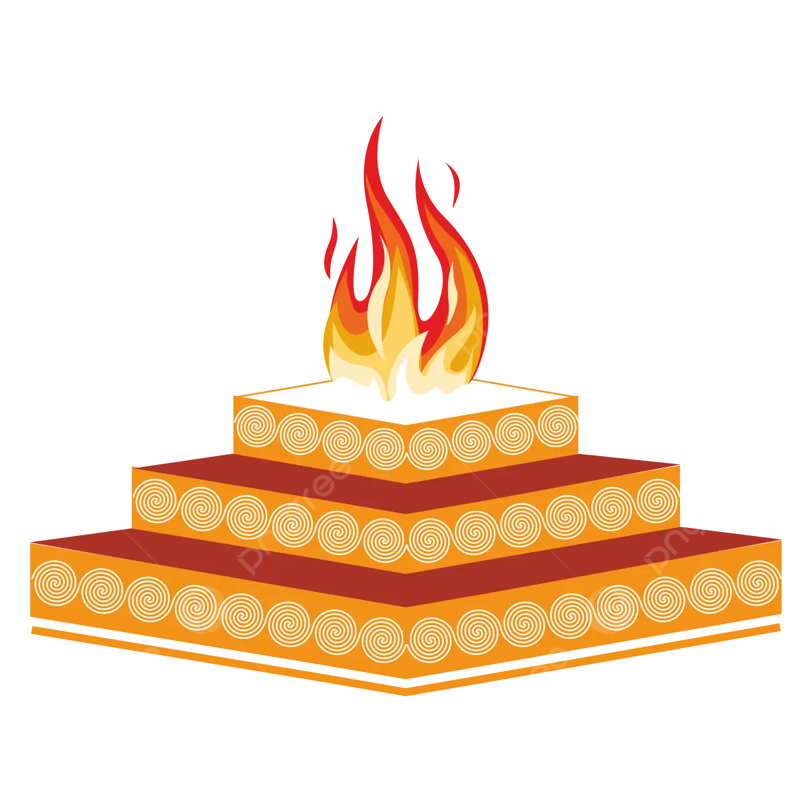

Our Spiritual Collection
We curate sacred and devotional products used in Indian rituals and spiritual practices. Each item is purified and eco-conscious – recycled brass, organic incense, or ethically sourced rudraksha makes your rituals truly meaningful.
Key Products
- Organic Incense Sticks & Dhoop
- Brass Diyas & Puja Thali Sets
- Rudraksha Malas, Yantras & Bells
- Smudge sticks, Camphor, Conch Shells
Applications
- Used in temples, homes, and gifting
- Perfect for yoga centers, spiritual retreats
- Exported to US, EU, Australia for Indian diaspora
Why Choose JontyMart?
- Offer 100% natural and traditional products
- Secure packaging with QR labels & instructions
- Bulk supply to importers & cultural stores
- Support spiritual brands with white-labeling
Handling Instructions
Keep incense dry and sealed. For brass, clean gently with lime or cloth. Store rudraksha in dry boxes. Avoid exposing spiritual items to rough handling or pollutants.